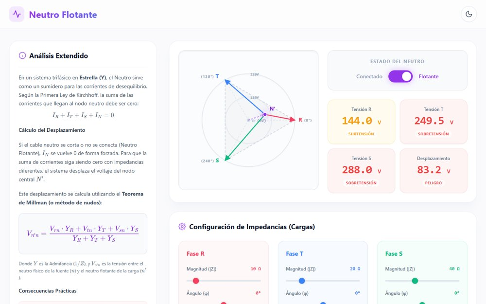
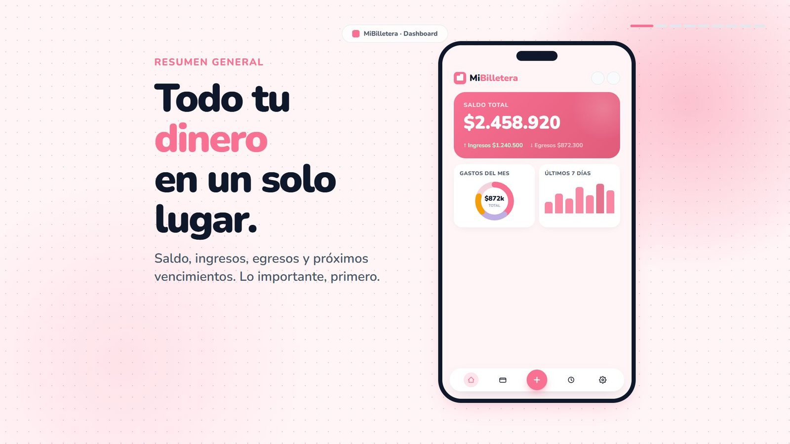
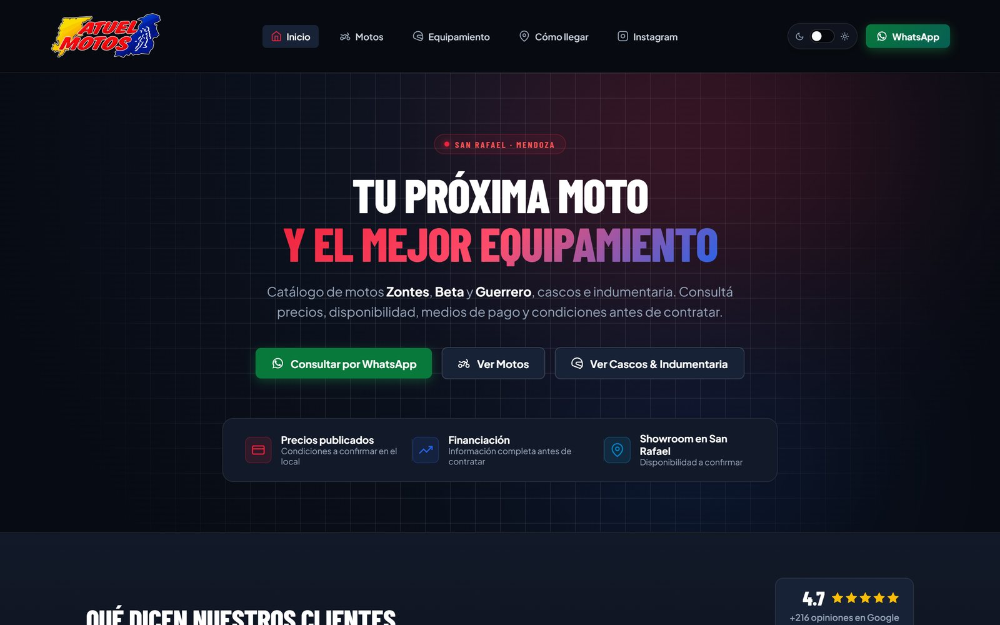

Proyectos de ingeniería
Todas las fichas en una lista, cada una con el problema, lo que hice y sus límites. La presentación está en la página principal.
Sistemas eléctricos

Simulador de neutro flotante
Muestra qué tensiones aparecen cuando se corta el neutro con cargas desequilibradas.
JavaScript, Teorema de Millman

Simuladores de circuitos eléctricos
Simuladores y material de estudio que se usan desde el navegador.
HTML, CSS, JavaScript

Capacidad dinámica de una línea aérea
Estudio preliminar de cuánta corriente admite una línea existente según el clima de cada hora.
Python, NumPy, Matplotlib, ERA5
Ingeniería mecánica y térmica

Software y automatización

Nexxo
Sistema de gestión para un comercio de motos y repuestos, con ventas, stock, caja y encargos en un mismo programa.
Python, FastAPI, PostgreSQL, React, TypeScript, Tauri
Motor paso a paso con Arduino
Control de un motor paso a paso con pulsadores y finales de carrera.
Arduino UNO, C++
PCScanner
Relevamiento de hardware para el servicio técnico.
PowerShell, BAT, HTML

MiBilletera
Aplicación web de finanzas personales, con movimientos, tarjetas en cuotas, gastos fijos y ahorro.
JavaScript, Tailwind CSS, Chart.js, Firebase
Sitios web

Sitio web de Atuel Motos
Catálogo en línea de motos, cascos e indumentaria para un comercio de San Rafael, con simulador de cuotas.
Astro, TypeScript, Supabase, Cloudflare Workers

Cuackdernos
Configurador web para diseñar un cuaderno de discos personalizado, ver cómo queda y encargarlo por WhatsApp.
HTML, JavaScript, Tailwind CSS, Firebase